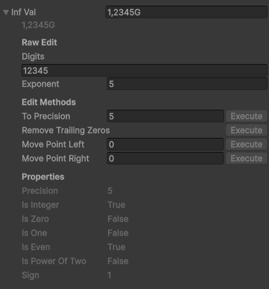

InfVal
Description
InfVal is the core struct of the asset. It stores two private fields:
a BigInteger for the digits and an int for the exponent.
It is similar to a Java BigDecimal, with an exponent instead of a scale
(exponent = -scale). This lets it represent any integer or floating-point
number with arbitrary precision.
Usage
InfVal is in the InfiniteValue namespace.
using InfiniteValue;It is a value type (struct): assigning it copies the value, and operations never modify the original.
InfVal a = 42;
InfVal b = a;
b = b + b; // a is unchanged, b is now 84
It is publicly immutable. You can safely pass it with the in keyword
to avoid a copy.
void Method(in InfVal arg) { ... }Every numeric primitive type implicitly converts to InfVal. An InfVal can be explicitly cast back to any of them.
InfVal iv = 1.23f;
float f = (float)iv;float or
double holding one throws an ArgumentException.
For the full list of constructors, operators, methods, and properties, see the Public API.
Inspector
InfVal is serializable. Declare it as a public field
or with [SerializeField] and it appears in the inspector.
Click the arrow or double-click the label to expand the drawer.

- Value field: Shows the formatted value. Edit it and press Enter to set a new value; the text is parsed using the default formatter.
- Raw Edit: Edit the
digitsandexponentdirectly. - Edit Methods: Call
ToPrecision,RemoveTrailingZeros,MovePointLeft, orMovePointRightwith one click. - Properties: Read-only display of all public properties. "Undefined" means the property threw an exception (e.g.
isEvenon a non-integer value).
Which sections appear and whether they show titles is configurable in the Configuration asset (see Configuration).
String representation
Call ToString() with no arguments to format using the project-wide
default formatter from the Configuration asset. Pass a formatter
explicitly to override it for a single call.
InfVal iv = 1234567f;
string s1 = iv.ToString(); // uses Configuration default
string s2 = iv.ToString(myFormatterAsset.formatter); // explicit formatter
For a raw, unformatted representation useful for debugging, use
ToDebugString(). It returns a string in the form (digits, exponent).
InfVal iv = new InfVal(1234.5f, 6);
Debug.Log(iv.ToDebugString());
// output: (123450, -2)Parsing
Two static methods convert a string to an InfVal. Both accept an
optional IInfValFormatter; if omitted, they use the
Configuration default.
InfVal.Parse(string): Returns the parsed value; throws aFormatExceptionif the string is invalid.InfVal.TryParse(string, out InfVal): Returnstrueon success,falseon failure; never throws.
InfVal a = InfVal.Parse("1.5k", myFormatter.formatter);
if (InfVal.TryParse("42", out InfVal b))
Debug.Log(b); // 42"123.00" gives digits=12300, exponent=−2, which is more precise
than "123".
Troubleshooting
Division result is imprecise
A division result holds as many digits as the more precise operand. If both operands have a low precision, the result keeps only its first digits.
// "1" and "3" have 1 digit of precision: only 1 digit in the result
Debug.Log((new InfVal("1") / new InfVal("3")).ToDebugString()); // (3, -1): 0.3
// Specify precision explicitly to get the expected result
Debug.Log((new InfVal("1", 9) / new InfVal("3")).ToDebugString()); // (333333333, -9): 0.333333333
Arithmetic returns an InfVal with the precision of the
higher-precision operand. All types default to their maximum digit count
(e.g. 9 for float, 17 for double, 29 for decimal,
10 for int, 19 for long, etc.).
Methods seem to have no effect
InfVal is immutable. Methods like ToPrecision return a
new value; they do not modify the original. Always assign the result.
iv.ToPrecision(3); // does nothing
iv = iv.ToPrecision(3); // correctLimits
InfVal is not truly infinite. The practical bounds are approximately ±104 294 967 295, with an epsilon of 10−2 147 483 648 and a maximum precision of 2,147,483,647 digits (reaching it would require several GB of RAM for a single InfVal).
Performance
For stable performance, keep precision constant. Set it when creating the value.
InfVal iv = new InfVal(0, 256); // 256-digit precision
iv = new InfVal(0).ToPrecision(256); // equivalent- Cache the
ToString()result and refresh it only when the value changes. - Pass InfVal with the
inkeyword to avoid unnecessary copies. - Call
RemoveTrailingZeros()to reduce digit count without changing the value.